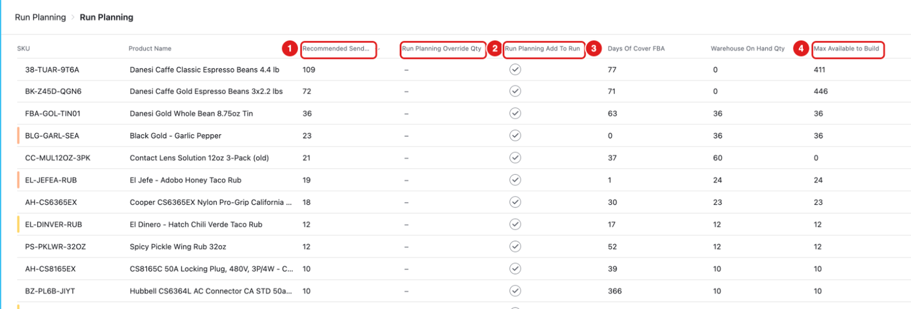
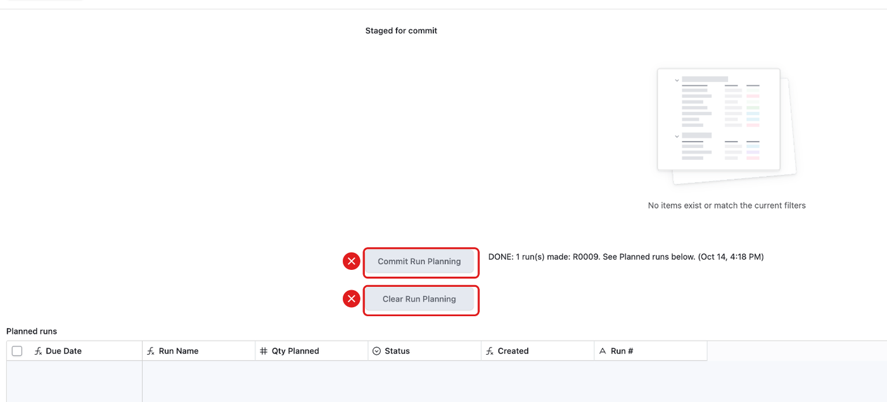

What this page is for
Run Planning shows which products we should build and send to Amazon next.
Who uses it: Becca and Adam decide. Chad can read it to see what is coming.
The list

- 1 – Recommended Send Qty: how many the system suggests we build and send. It plans enough stock at Amazon for 45 days, plus the days Amazon needs to receive a shipment (about 12 days now; RemBase updates this every day). The list is sorted by this number.
- 2 – Run Planning Override Qty: Becca types her own number here to replace the suggestion.
- 3 – Run Planning Add To Run: tick to put this product in the next runs.
- 4 – Max Available to Build: how many we could build with the parts we have now.
- Days Of Cover FBA: how many days the stock at Amazon will last. Blank, with 0 at Amazon, means the part is no longer in Amazon’s report. See Inventory.
- Warehouse On Hand Qty: how many finished units are in our warehouse.
Max Available to Build is not stock. For a pack, it is how many packs the parts can make. For a single part that goes into packs, it is what is left after the packs take their share.
The numbers update every hour. During the update some rows can show different times. Wait a few minutes and look again.
Run Planning – Commit (Becca only)

- Commit Run Planning makes production runs from the ticked rows.
- Clear Run Planning removes all the ticks.
- Planned runs lists the runs it made.
Do not press these unless you are Becca.
Common mistakes
- Reading Max Available to Build as stock. It is not stock.
- Ticking Add To Run to “try it”. The ticks are shared. Becca’s next commit would use them.
- Thinking a number is wrong during the hourly update. Wait a few minutes.